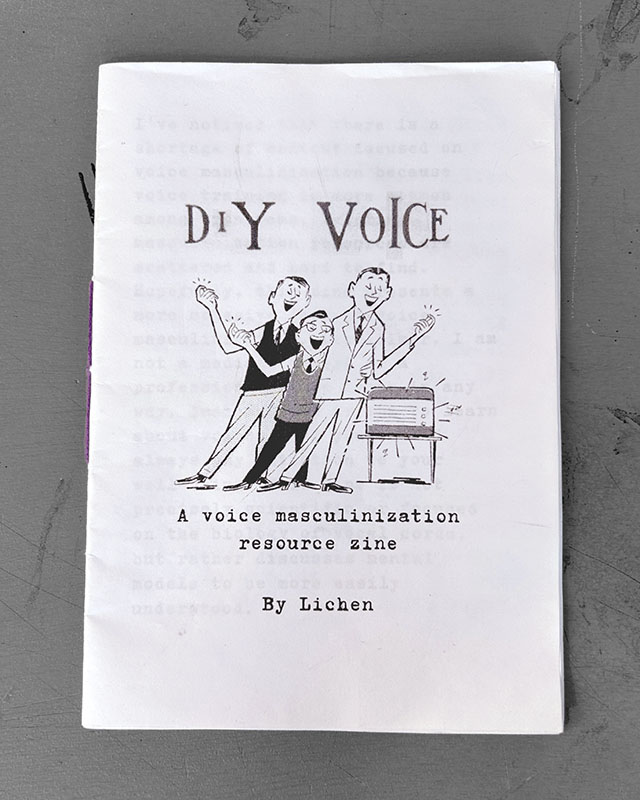
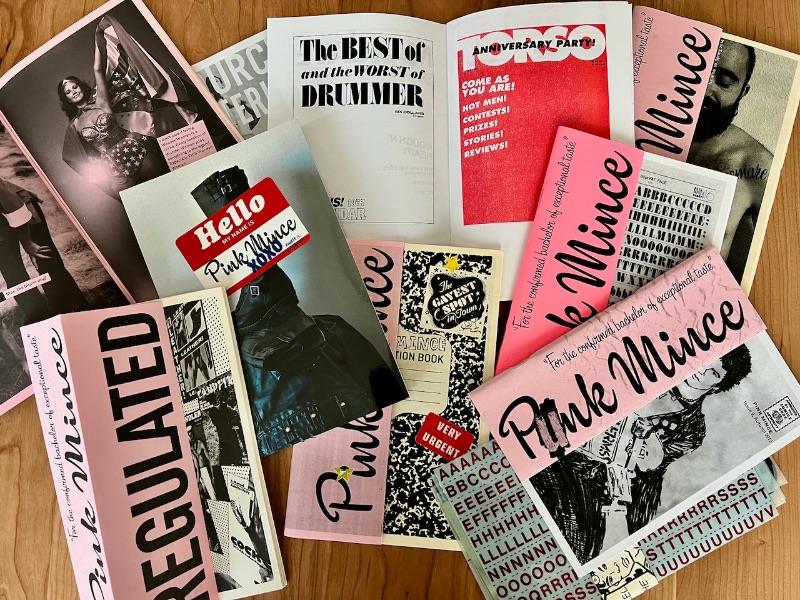

hello, beautiful stranger
who are you? what is your name?
wtf is queer indie publishing?
When I say publishing, I mean the acts of putting information out in the world (primarily by printing it on paper or another physical carrier, although nowadays carriers of information can of course be digital too) with the aim of sharing it with others.
When I say indie publishing (aka independent, alternative or “self-”publishing), I mean the acts of publishing that happen outside of the dominant, controlled and restrictive spaces of the mainstream publishing industry.
When I say queer, I mean anything that doesn’t conform to the heteronormative, patriarchal, traditional power dynamics in human relationships.
So when I say queer indie publishing, I mean the acts of sharing non-conforming ideas in ways that bypass the dominant system(s) of power and control.
In her thesis Two Stories of Feminist Publishing, Lara Dautun draws up a neat definition of independent (aka “indie”, alternative, or self-) publishing. I really love it & want to quote it somewhere somehow, but I don't know how to fit it into my super condensed intro... let it be here for now I guess.
Publishing is a political force. The publication holds potentials to foster, amplify and spread ideas, and by unfolding in the world, to inform, influence, criticise, persuade, manipulate. Conversely, it holds the power to exclude, erase and marginalise. Historically associated with the printed form, its accessibility is thus connected to the one of tools for production and diffusion: “Freedom of the press is guaranteed only to those who own one” (attributed to Liebling, 1990 as cited Dżułaj, 2020, sec. Cases: Provo and Raddraier). Those who own one, are also often “those in traditional positions of power [who] use those tools to engineer and control our defining narratives” (Soulellis, 2021a, sec. Intro), a privileged few who hold a monopoly, serving dominant discourses and maintaining power dynamics, determining—in a pre-internet era—what was (and maybe more importantly what was not) published, excluding minorities and dissident perspectives (Huisman, 2016, p.4). This motivated the creation of alternative and independent publishing practices, to spread ideas and information outside of state, institutional or religious control, but also outside of a restrictive mainstream industry. A mode of publishing characterised by its sense of urgency; responding to the absolute necessity to record, recount and inform in the present (Soulellis, 2021a, sec. Intro).
oh, beautiful stranger, i wonder
where you come from
and how you came here
lil history of queer indie publishing
aka how the fuck do you do that?
In the 1960s-80s, gay and lesbian publishing was blooming in the US (alongside other liberation movements). Various activist groups were gathering together, setting up underground printing presses and distributing newspapers (e.g. Come Out!, Common Lives/Lesbian Lives, Gay Liberator, Gay Flames, Lavender Woman, Lesbian Tide, and many more) — to inform local communities about queer issues, struggles and events, and to create spaces for collective discussion. As it was almost impossible to squeeze such content into the mainstream papers, they learned to produce and publish their materials autonomously. How? In these pre-internet times, activists were quickly picking up the latest developments in printing technology — from stencil duplicators (mimeograph and later on risograph), originally intended for schools and offices, to offset printing and photocopying (xerography), that were both becoming increasingly affordable and available to the general public. Alessandro Ludovico draws a really detailed overview of these developments in the chapter “A history of alternative publishing reflecting the evolution of print” in his book Post-digital Print.
It was not only the United States, where the gay & lesbian movement developed their own alternative publishing models. In her thesis Two Stories of Feminist Publishing, Lara Dautun recalls the history of the Women in Print Movement of the late 60s-70s in The Netherlands:
[Being able to produce and publish their content autonomously, without the influence of others, has always been] a driving force of the Women in Print Movement. Many publications would not have seen the light of day otherwise, as funds were lacking to afford big print runs in mainstream printing houses, which were already quite reluctant to print feminist publications discussing topics such as sex, women’s health, abortion, lesbianism, and feminist politics. (Huisman, 2016, p.4) Learning the technical and practical skills was therefore essential, not only to preserve autonomy, but also to follow the second wave feminist idea “that the simultaneous development of women’s heads and hands was necessary to prevent a divisive split between radical theory and practice. Without a conscious blurring of the lines between manual and mental labour, feminists risked recreating among themselves the hierarchies of class, intellect, power, and so forth, that they were committed to eradicating” (Travis, 2008, p.280). [...] many women were already working in the printing trade before joining the movement, in which they shared their knowledges and skills with other women who could, in turn, handle printing and production.
Then, the late 1980s and early 1990s saw the “queer zine explosion”.
Building on the legacies of alternative publishing in the wake of liberation struggles of the 1960s and the DIY ethos of punk culture, queer and feminist artists of this period boldly seized control of the practices related to media creation and distribution, in order to offer representations and perspectives that differed from those promoted by commercial culture industries (if they were represented at all).
Apart from spreading vital information within communities, zines often stepped into self-exploration and self-expression territories — telling personal stories, sharing individual reflections, gathering scattered memories and recalling eerie dreams.
All queer publishing used to be independent back in the days. There simply was no other way.
Its main aim was to spread information that would otherwise stay unknown. To record stories that would otherwise get lost. To bring people together and organise communities. To change the lived realities. To imagine different (queerer?) futures. To survive. And to help others survive.
my lovely beautiful stranger,
what stories can you recall?
what’s hidden in your hand gestures?
what do you see with your eyes closed?
q.i.p. looks & vibes
How does q.i.p. look like? Is there a queer “style”/aesthetic?
There is no one “queer aesthetic” or “queer style”. Queer can look very DIY, ad-hoc, quick & dirty & undesigned (e.g. early gay lib’s newspapers, homocats, reminders zine). It can also look very polished, neat, glossy & almost overdesigned (e.g. Pink Mince, Butt, The Boy is Beautiful, No One Magazine). It can be as simple as handwritten or rushingly typed text with black&white line drawings, or icons, or no visuals at all (e.g. “What I learned from top surgery” zine, “drag is 4 everyone!” zine, queer+trans punk music zine, voice masculinization zine). Or it can be super multilayered, visually overwhelming, and overly complex in production (e.g. Hello Mom, Trans*SEXual, Pink Mince).
These radical publications were all very different from each other but there is a kind of approach and some fairly consistent design and typographic methods that are in direct contrast to the slickness and corporate control of mainstream graphic design of the time.
There’s the predominant use of do-it-yourself techniques that worked well with xerox machines and mimeograph printers, where duplicates could be made directly from an original master, like the risograph many of us love today. As well as non-traditional acts of publishing as protest, using language and the body in public space, challenging what we even mean by publishing.
[...] This is not a queer aesthetic, and it would be misguided for me to arrive at that conclusion. [...] But still, there is something queer going on here, in the moves and the acts and the attitude — design decisions that were made out of necessity, outside of the dominant forces of the design industry and mainstream publishing, without access to sophisticated tools, or editorial design expertise.
In this very broad sense, queerness can be located in the radical, outsider status of these publications and their designs. This is queerness as an underground, alternative way of creating networks of care. Queerness in the scrappy, ad hoc, and sometimes homemade designs that were directly related to the urgency of protest and activism and survival.

DIY VOICE zine by Lichen

Pink Mince zines by Dan Rhatigan
Dan [Rhatigan] focuses on the Letraset rub-down letters [...] and shares his own project [Pink Mince] where he re-traces those covers as a way to isolate and examine the type, and reclaim history.
“It’s about material as much as content, I make the production so hard for myself (e.g. in the autumn 2025’s issue of PM there’s at least 4 different paper types and different printing techniques, there’s a folded centre sheet). PM started with me making recreations of the layouts of gay porn magazines without the pictures, carefully recreating typography…”

MOSHPIT queercore zine #7 by ???

DYKE LOVE, DYKE RAGE, DYKE MAGIC zines by DykeHouse Press
dear beautiful stranger, i’m dreaming
of screaming with you in the streets
of holding your hand with blisters
of passing your stories to kids
why do queers indie publish?
Publishing is more than making a book. It is about creating a public.
I saw something in small press publishing that felt urgent and worthwhile right away. The mission has always centered around giving Queer people a voice to make work that doesn't glamourize the cis gay male body. Although I didn't have the words for it at the time, I knew I couldn't make it as an artist in the hyper-capitalist art world, but I could do something with zines.
Many queer zines were produced out of an urgent need to provide narratives, or invent paradigms, not found in white, straight, normative culture.
r.i.p. q.i.p.
goodbye, my beautiful stranger
i hope we will meet again
(you know, i will never forget you
even though you don’t know who i am)